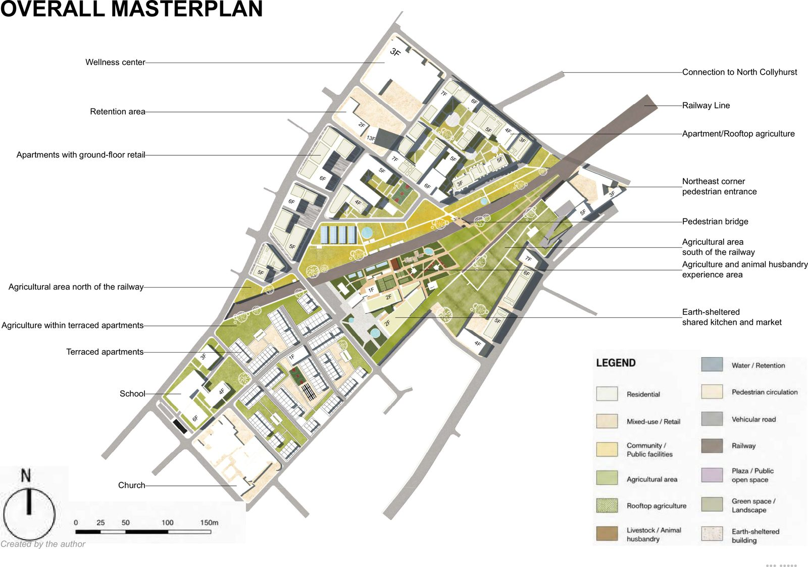
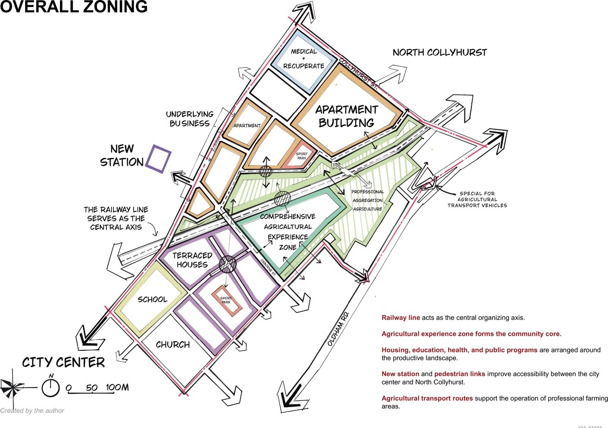
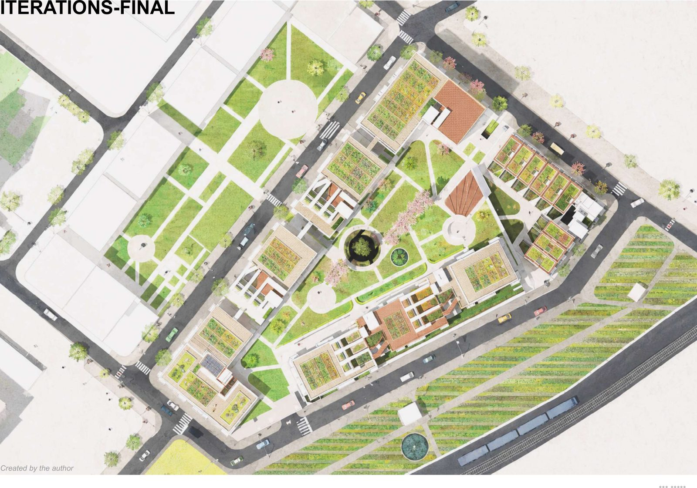
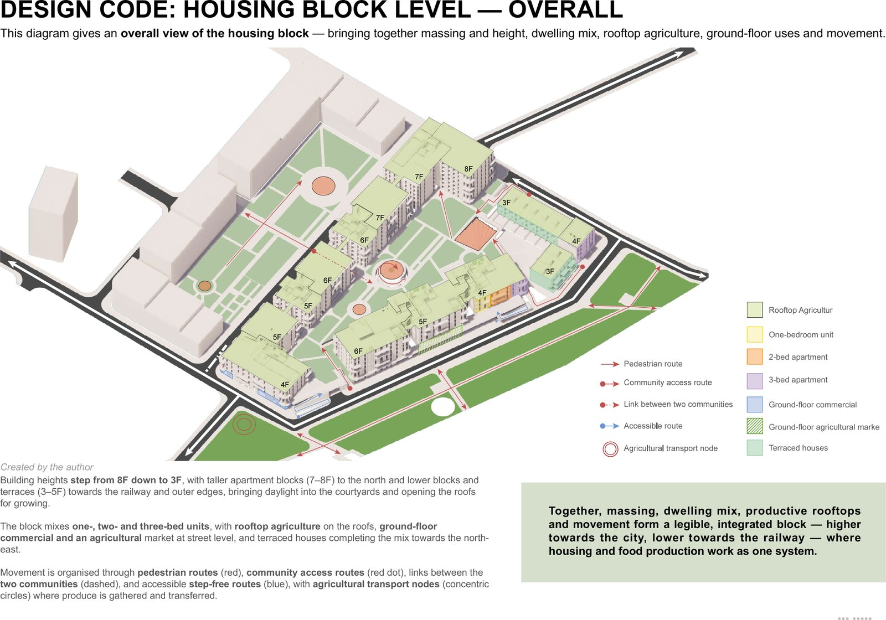
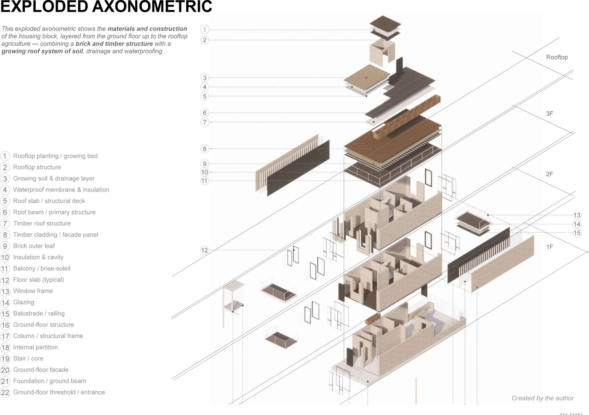
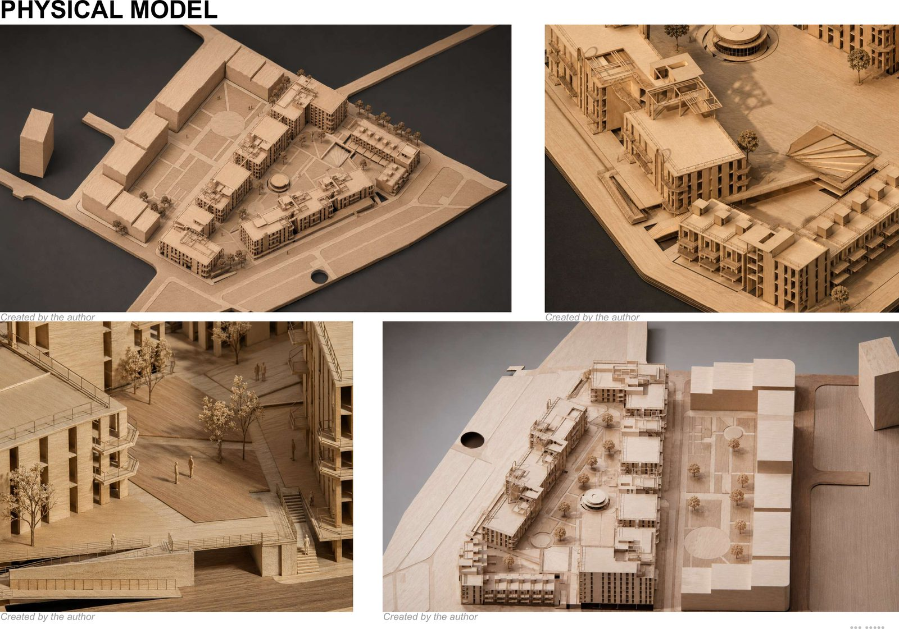
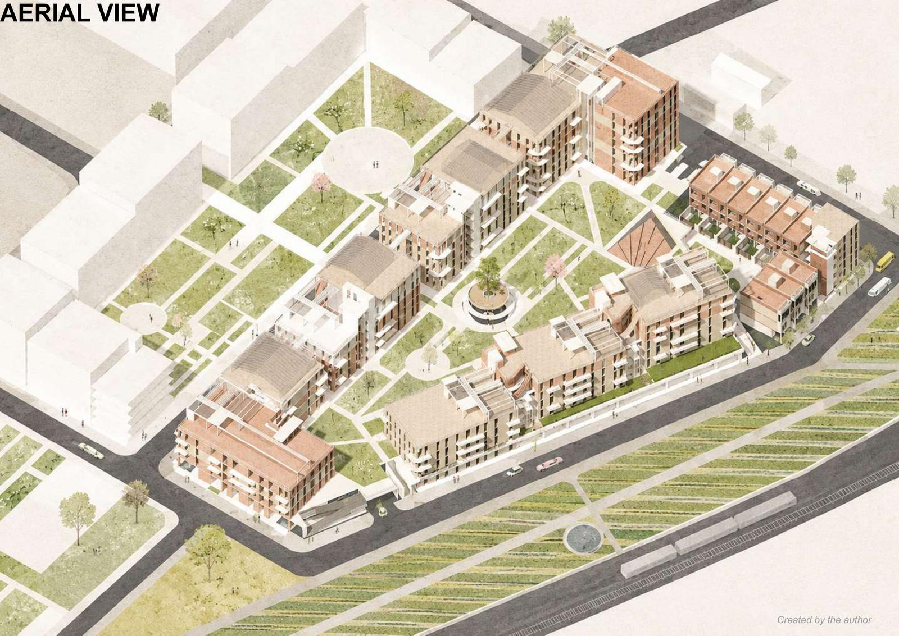
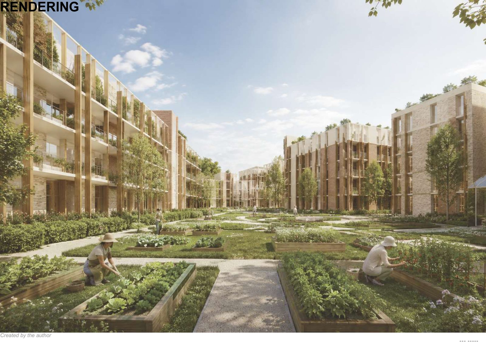

场地与问题 / SITE
一片被在用铁路切开的社区。
场地位于曼彻斯特 South Collyhurst，约 22 公顷，被一条在用铁路切分。我参加了曼彻斯特市政府的场地愿景会议，并组织团队实地考察，把政府、社区与场地的问题转化为团队的设计目标。

设计策略 / STRATEGY
以城市农业为纽带，修补铁路造成的割裂。
个人方案以城市农业连接住宅、公共空间与社区服务，组织步行连接与生产性景观，修补铁路造成的空间割裂。


三级设计准则 / DESIGN CODE
从片区、街区到住宅类型，三个层级的设计准则。
方案经 3 轮迭代，最终整理为片区、街区和住宅类型三个层级的设计准则，并以总平面、轴测、节点与住宅类型图表达。


成果与组织 / OUTCOME
60 页 A3 成果集，团队方案按时交付。
作为组长，我按图纸、模型拆分任务并设定阶段节点，跟进进度，滞后时调整分工；团队方案与个人方案均按时交付。
约 22公顷场地
3 轮方案迭代
3 级设计准则
60 页A3 成果集


